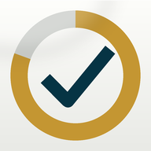

Small habits daily → big success! 🔥
The Loona Habits App is a free daily habit tracker that lives in your web browser. There is nothing to download from an app store, no account to create and no subscription waiting at the end of a trial. You open the page, see today's date and your list of habits, and tap each habit as you complete it. That is the whole system — deliberately. Habit tools fail when they ask for more effort than the habits themselves, so this app keeps the daily check-in under ten seconds and puts all of its intelligence into the two things that actually keep people going: a visible streak and an honest daily score.
Every habit you complete today fills part of your Today's Progress bar, shown as a percentage at the top of the app. Beside each habit sits its streak — the number of consecutive days you have completed it, marked with a flame. The streak is calculated from your own history and is fair about timing: it does not count today against you until the day is over, so checking the app in the morning never shows a broken streak. Through Manage Habits you can add any habit of your own and remove any you no longer want. The app starts you with five balanced defaults — Namaz, Recite Holy Quran, Exercise, Learning AI and Video Idea — covering worship, health, learning and creative work, but your list becomes entirely yours within a minute. The History panel then keeps a record organised by date: open any past day to see which habits were done, which were missed, and that day's score as a percentage.
Motivation starts habits; visibility keeps them. A streak turns an abstract intention — "I should read more" — into a concrete chain you do not want to break, and a daily percentage makes a partial day honest instead of invisible: four habits out of five is 80 percent, a good day worth recording, not a failure to hide. Reviewing your history by date shows patterns no memory keeps accurately — which habit slips on busy days, which one never slips at all — and that knowledge is how a routine gets repaired instead of abandoned.
It helps students building a study or revision routine, anyone strengthening daily worship with Namaz and Quran recitation tracked consistently, teachers and workers adding exercise, reading or AI learning to a crowded day, and creators keeping a daily idea habit alive. It is equally suited to a single private habit you tell nobody about, because there is no feed, no followers and no social comparison anywhere in the app.
Your habits and ticks are stored only in your own browser, on your own device. Nothing is uploaded to a server, Loona Automation keeps no copy of your routine, and the app works offline once it has loaded. You can also install it on your phone's home screen as a PWA, so your daily list is one tap away. One honest caution: because the record lives in your browser, clearing that browser's site data can erase it — treat the app like a notebook you keep, not a cloud account.
Loona Habits App is made by Loona Automation, founded by Aurang Zeb Loona, a school teacher and AI teacher trainer from Jaranwala, Faisalabad, Punjab, Pakistan, on a simple principle: small habits daily lead to big success, and a useful tool should never put a sign-up wall or a payment door in front of the person who needs it.
Yes. The Loona Habits App is a free habit tracker — no signup needed. Open the page, add your habits and start today.
Any daily habit you want to build — study, exercise, reading and more — including a dedicated Namaz (prayer) tracker, with daily streaks to keep you consistent.
Each day you mark your habits done, your streak grows and the app shows today's progress as a percentage. You can also review your full history by date to see how consistent you have been.
Small habits done daily lead to big success. Tracking them visibly — with streaks you do not want to break — is one of the simplest ways to stay on track.